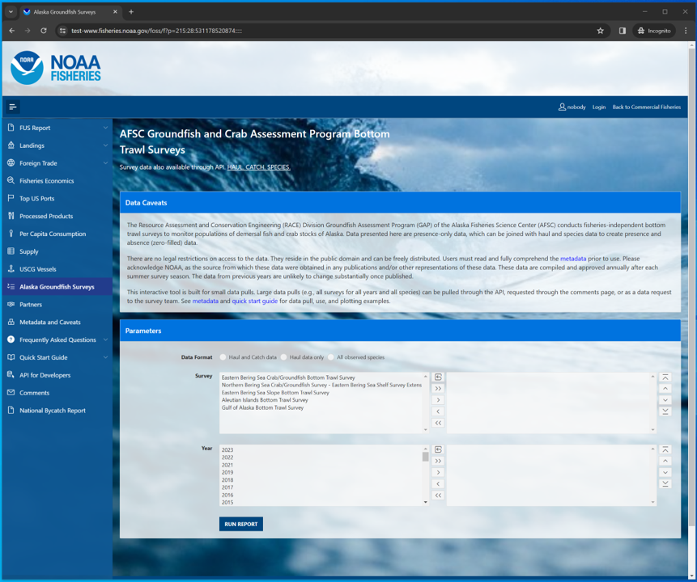
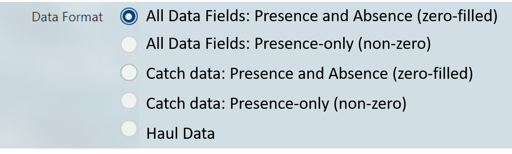

Using the FOSS platform
Select and filter
Select, filter, and package this and other NOAA Fisheries data from the Fisheries One Stop Shop (FOSS) platform. A user guide for the FOSS platform can be found here. To begin a report, select options from the boxes what you need data for.
For a given box, select one or a few options from the “options box” (list on the left) to query by highlighting them. To select multiple options, hold down the CTRL key while clicking on the options of interest, or click and drag down the list. Once the options you wish to be included in your query are highlighted, click the right-pointing arrow (>) to move them into the “selection box” (list on the right). If you accidentally select an option that you do not want to query, simply select the unwanted option from the selection box and click the left-pointing arrow (<).
If you wish to select all options from the options box and send them to the selection box, simply click the double right-pointing arrow (>>). If you want to unselect all options from the selection box, use the double left-pointing arrow (<<) or the reset icon.
To find a specific species or group more quickly you can use the Search Species option to quickly narrow the options. Search for parts of species common names in the Search Species box by entering a term and clicking the search button. The platform will return a shorter list in the Speices options box of only species that contain a match to that search term.
Use the Reset All Parameters button to reset all parameters for entire form.

Filter options:
Survey: Each survey has different in design, time series, and history. More information on each survey and their designs can be found in our annual data reports.Year: Surveys are not conducted in all years, so only data from the years for which the survey was conducted will be returned.Species: Common name of all species ever encountered in the survey. Find more information about these species in our survey code books.
In this example, we’ll select for 2022 eastern Bering Sea Pacific cod data. Here, we used the
Search Speciesbox to search for species with the term “cod” in their common names and selected “Pacific cod” from that shortened list.

Select data format
Select from the below radio list of pre-designed output tables. Once you run the report, the user can further specify filter data and select columns of interest. The tables below will only include data from the selections made in the previous step.
All Data Fields: Presence and Absence (zero-filled): The most complete version of the data, including species, catch, haul, and environmental data. This data will include catch data for where species were caught and zeros for where the species were not caught. This is important for calculating catch-per-unit-effort data, preparing distribution plots (e.g., using the akgfmaps R package), and many statistical analyses.All Data Fields: Presence-only (non-zero): The second most complete version of the data, including species, catch, haul, and environmental data. However, this data only includes catch data for where species were caught and does not include zeros for where the species were not caught. This will return smaller, more focused data and can be useful for quickly assessing how many species were caught or how many stations species were caught at.Catch data: Presence and Absence (zero-filled): This data set is similar toAll Data Fields: Presence and Absence (zero-filled), but only includes catch and species data columns.Catch data: Presence-only (non-zero): This data set is similar toAll Data Fields: Presence-only (non-zero), but only includes catch and species data columns.Haul Data: This data set only includes haul and environmental data collected from the survey. This data will only include one observation per haul event/station.
In this example, we’ll select
All Data Fields: Presence and Absence (zero-filled).

Run report
Click the RUN REPORT button. Below the select and filter area, the results of your query will appear below the page in the format you selected. To change the format, make a different selection and run the report again. Further modifications to your results can be made by clicking on the Actions button above your data. Here you can download your data, select columns included in your results, and apply a variety of filters and mathematical tools.